Inspiration Feedback Reference
38 screenshots analyzed, tiered, and annotated with Florian's feedback. This is the source of truth for what resonates and why. Session: March 28-30, 2026.
Editorial Presence + Clarity Lens / Creative Direction
The Vision (Summary)
Core concept: "Clarity as a visual experience." The visual language should feel like the Brand Therapy process itself: things coming into focus, being uncovered, seen through a lens for the first time.
Magazine cover metaphor: The brand presents Florian the way a magazine presents its cover subject. The subconscious message: Brand Therapy helps brands become "front page worthy." Big title, subject cutout, metadata at corners like a masthead.
Dark-to-light narrative: Homepage starts dark (confusion) and transitions to light (clarity). This IS the Brand Therapy promise. Not a dark website. A clarity journey. Transition happens fast.
Glass/lens metaphor: Not a trend. Connects to the lens photo, the prism concept, the idea of seeing clearly for the first time. Shows up as text being "uncovered" on scroll, subtle glass panels, the feeling that clarity is being applied in real time.
Purple as ultraviolet: Part of the light spectrum. Not just a brand color but part of the visual story about light and seeing.
The goal: "I want people to share my website just because of how cool it looks. Not even because of the content, but because of how impressive it is."
Magazine Cover Structure: Type + Portrait Integration
The consistent thread: massive name, cutout subject interacting with text, metadata at edges.
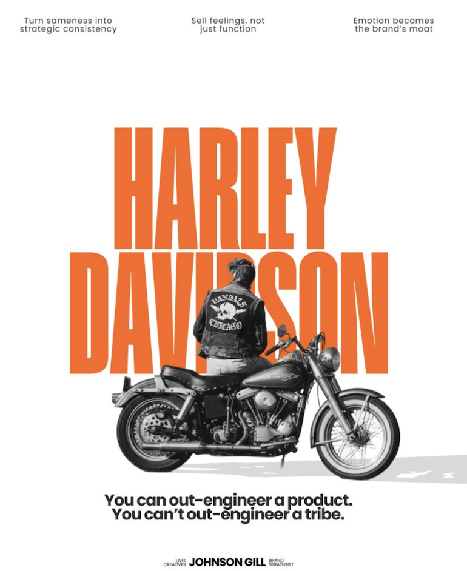
T1-johnson-gill-harley-davidson-poster
Johnson Gill / Lark Creatives
The magazine feel comes from the big title in the middle plus the three titles at top that you don't even need to read. It's almost like a movie poster. Likes the cutout of the subject with text behind it that you can still read. Also likes one word in a different color, especially when animated.
Magazine feel = big title + small masthead metadata at top/bottom + cutout subject. One accent-colored word in the headline. The structure creates the editorial authority, not the content.
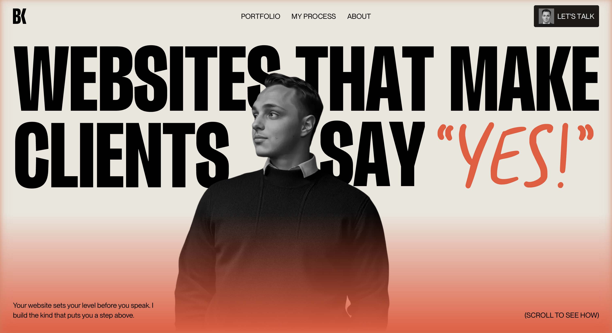
T1-bogdan-hero
bogdankolomiyets.com
Likes the cutout of the subject with text in the back. The same principle as Johnson Gill but as a website hero. Considering whether to use gradient or flat. Leaning flat but open to gradients that connect to the glass/light metaphor.
Cutout portrait with type wrapping around the body. Gradient consideration: flat is the default, but gradient is acceptable if it serves the lens/light metaphor (not just decoration).

T1-arock
AROCK portfolio
The subject is behind the text, which changes the dynamic. Likes the really big title + subject combination. The background is subtle and refined. Wondering whether to go completely solid background or with a little texture.
Subject BEHIND text creates depth. AROCK's background is the reference for subtlety: not flat black, not heavy gradient, just barely there. Portrait behind text = less "look at me" and more editorial.
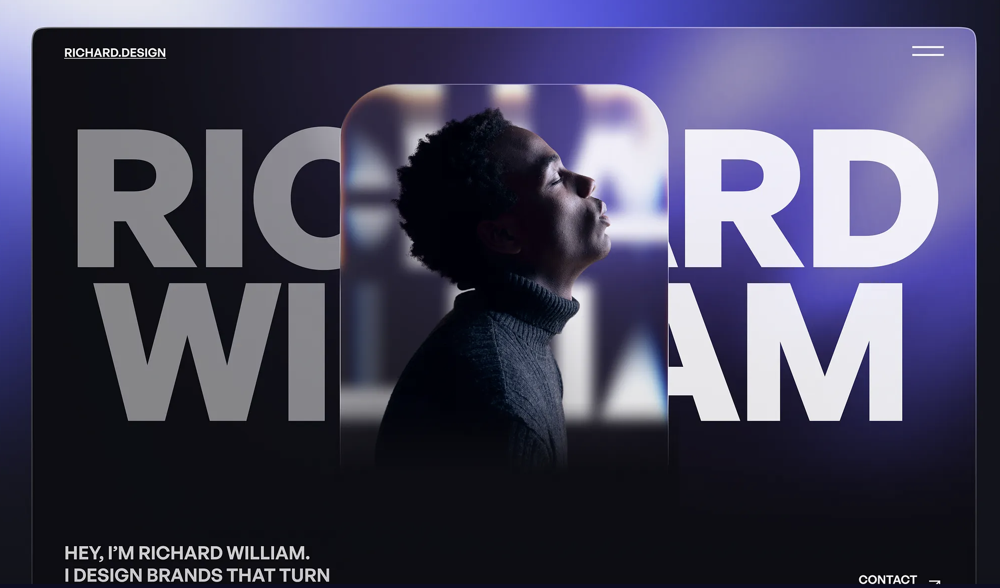
T1-richard-william
richard.design
Likes the idea of the lens or glass behind the subject that covers the title. Maybe a different layer order could work. The background is interesting: not flat, has depth. The glass effect emphasizes the background.
Glass/lens panel behind the portrait creates a depth layer. This is the closest to the FP palette (purple gradient). The glass effect is a design element, not just a filter. Background treatment matters: depth without being heavy.
Dark Hero: Editorial Authority
Dark backgrounds with warm or focused accents. The feeling of editorial control and drama.

T1-cheval-contact
valentincheval.design
Likes the subject and how text scrolls next to the portrait and the portrait moves around. Does NOT like the arrogant posture. This is the anti-reference for tone: editorial presence without ego. Acknowledged the imposter syndrome of using his own image at this scale but recognizes it's literally what he helps others do.
The animation and scroll interaction is excellent. The posture/tone is the anti-reference: editorial, NOT arrogant. The imposter syndrome is real but the irony is the point. The design IS the proof of concept for what Brand Therapy delivers.
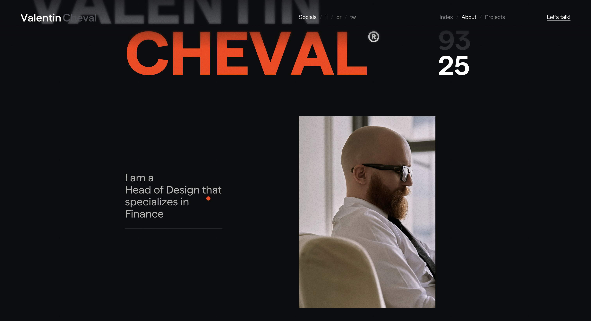
T1-cheval-dark-hero
valentincheval.design
Likes the composition: text is readable quickly. Name stands out in different color. Lots of white space. Big headers that change color as you scroll. The design always tells you what to look at. Works well on dark but "don't know if that would apply to us."
Color-change on scroll is a keeper. The design guides attention (you never have to figure out where to look). White space is critical. Dark works for the hero moment but not as the whole site.
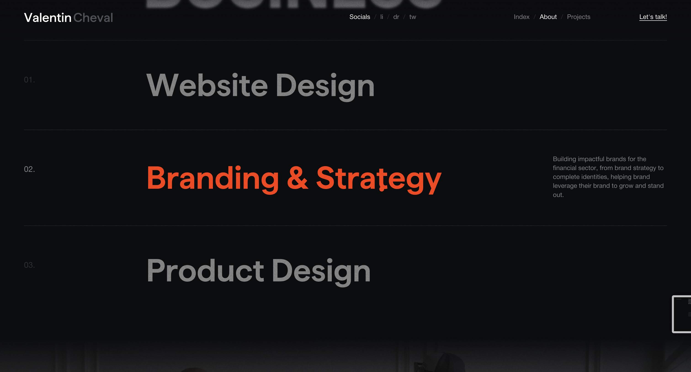
T1-cheval-services-list
valentincheval.design
(Reviewed as part of the Cheval site analysis. The expandable service list with active item highlighted in accent color was called out as a component pattern to adopt.)
Numbered expandable service list. Active item in accent color with description expanded. Simple, clean, guides attention to one service at a time.
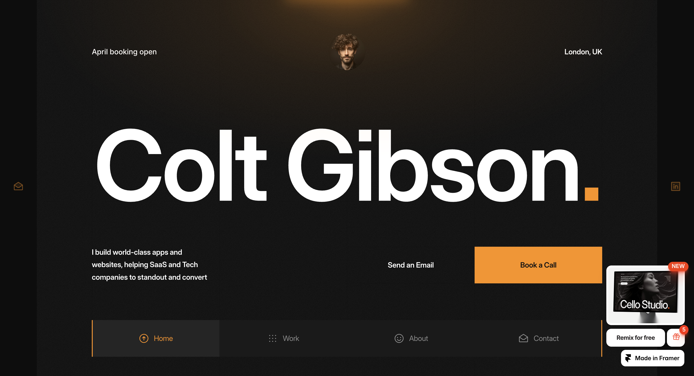
T1-colt-gibson
Colt Gibson (Framer)
"Not as cool" on second look. But likes the dot, the little color dot, same way FP uses the purple dot on the logo.
The colored period/dot as a signature detail is confirmed. The overall template energy is less interesting than the specific dot detail.
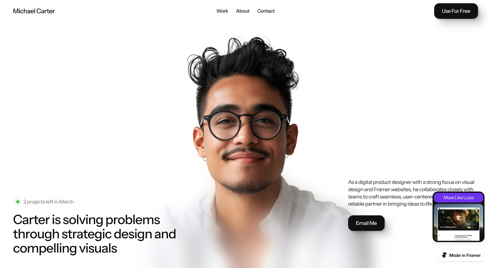
T1-michael-carter
Michael Carter (Framer)
Likes the composition: name top-left, menu middle, CTA top-right. Goes along with the magazine feel. But the CTA should NOT be a button on the top right because it would break the magazine feel. Likes the gradient/opacity glass feel at the bottom. "Would feel too imposter syndrome if it was just my face like that, but I need to get over this."
Nav structure: logo left, links center, text CTA right (no button). The face-forward approach is the direction but needs editorial framing to feel earned. Glass/opacity at bottom edges is a nice touch.
Text + Copy Treatments
How text is displayed, revealed, and animated.
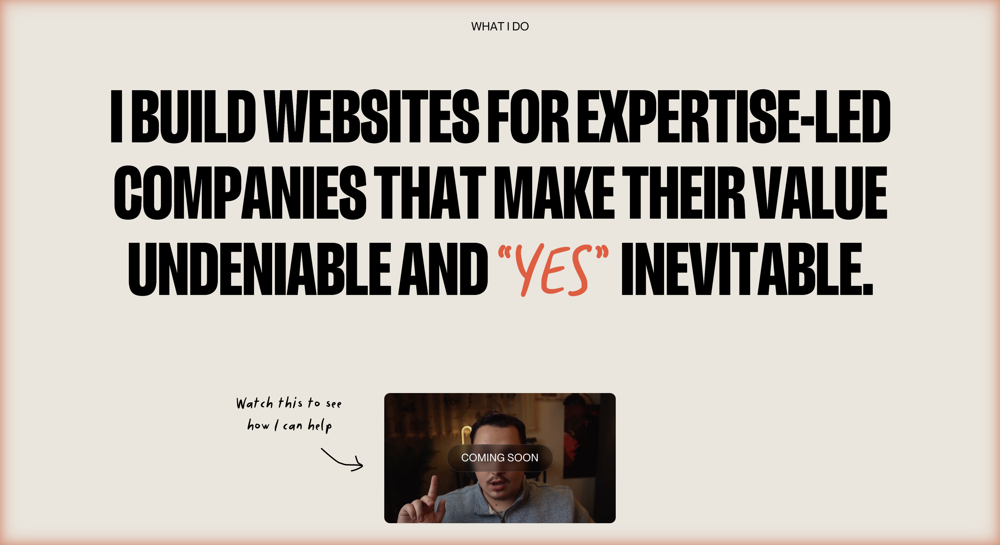
T2-bogdan-what-i-do
bogdankolomiyets.com
Likes how the video displays (reference for embedding video on site). The bold title + sub-text structure. Most importantly: don't ask the user to look at many things at the same time. There's a story, a flow. Very simple, to the point.
Video embed reference. One focal point at a time. Guided flow, not competing elements.
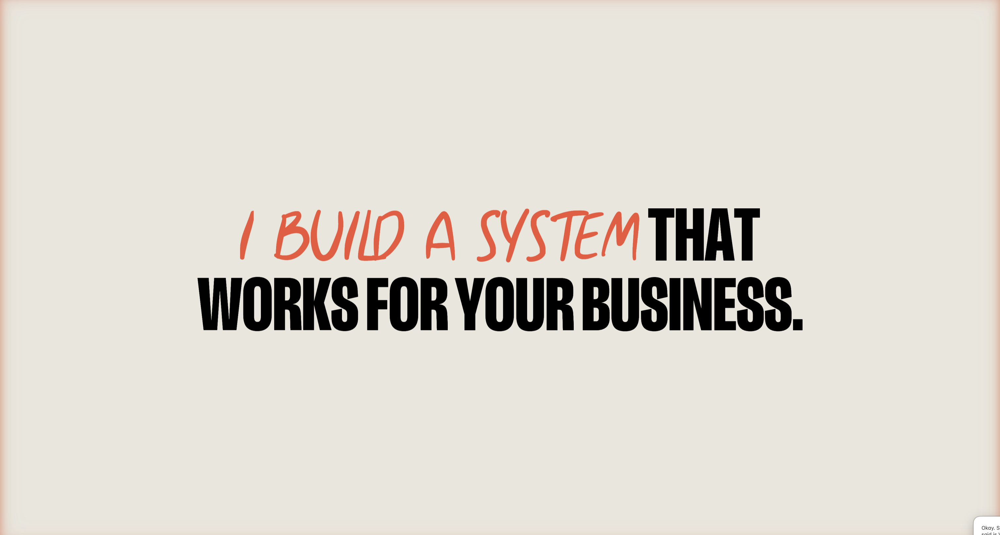
T2-bogdan-handwritten-bold
bogdankolomiyets.com
(No specific feedback. Captured for the type contrast treatment.)
Handwritten + bold type contrast. Florian said he might not want a different font for himself, but the principle of one word standing out (via color, not font) is confirmed.
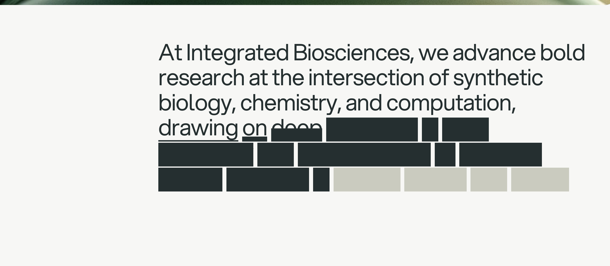
T2-integrated-bio-text-reveal
integratedbiosciences.com
This is a key reference. The text being uncovered as you scroll is a metaphor for clarity. "We shouldn't do it for every text, but the big headers like this, it makes sense." Wants to pair it with glassmorphism: "It's how clarity happens. It's a metaphor for uncovering clarity."
Text reveal on scroll = the central interaction metaphor. Glass blocks covering text that slide away. Use for hero statements and key messages only, not body text. The reveal IS Brand Therapy made visual.
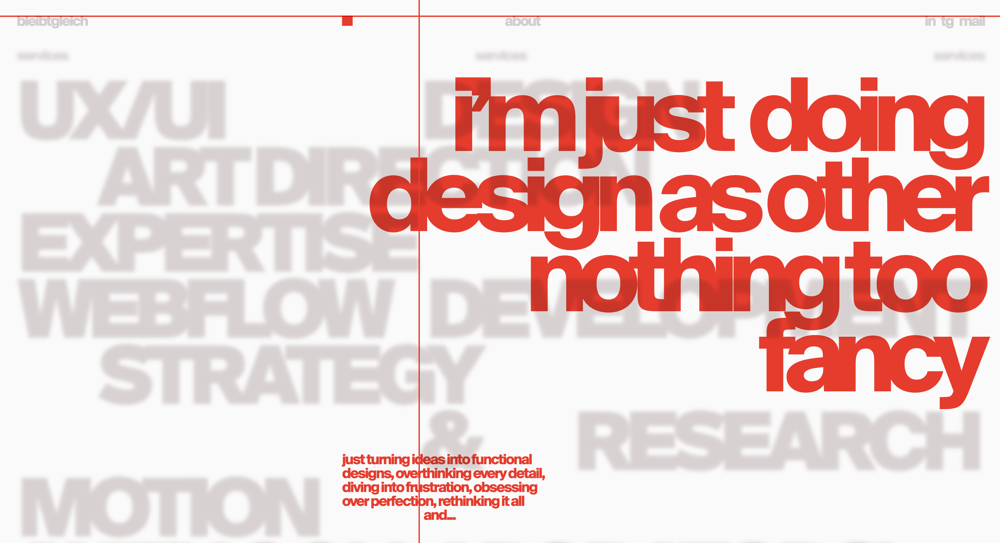
T2-experimental-typography
Unknown designer portfolio
"Maybe too artistic. But something with how I like big copies." Not as strong as other references.
Low priority. The oversized type principle is captured better in the T1 references.
Layout + Structure Patterns
Section layouts, grids, and structural approaches worth extracting.
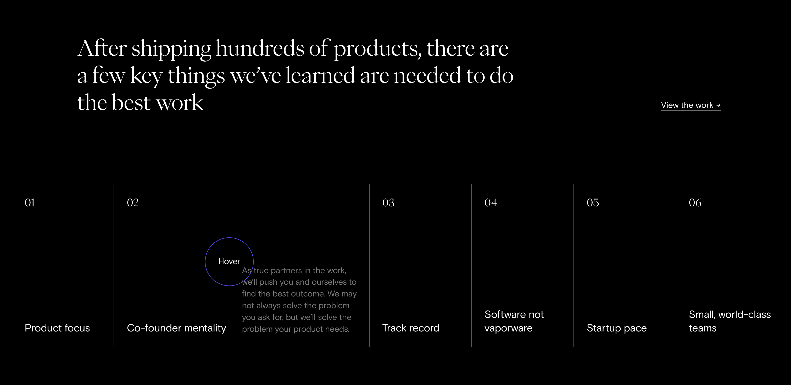
T2-tempo-numbered-columns
tempo.xyz
Likes the animation and hover interaction. Could be interesting for the process section. "Maybe a bit too dark, but just sharing."
Numbered columns with hover-reveal for process/values. The interaction pattern is useful, not the dark treatment specifically.
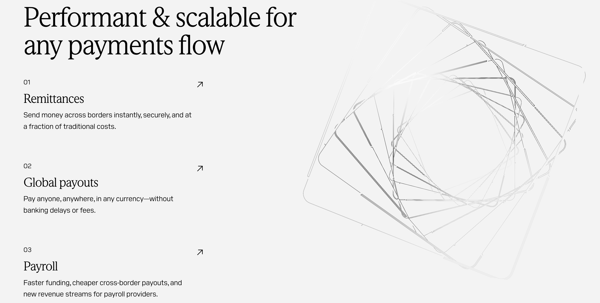
T2-tempo-numbered-list
tempo.xyz
Likes the animated glass frames on the right side. They represent what he's trying to do with the glass held in the hero image. "There is something interesting here" with the lens/glass concept translated to illustration.
Animated glass/lens frames as an illustration element. Connects the hero portrait (holding glass) to the broader visual language. Glass as a recurring motif, not just a CSS effect.
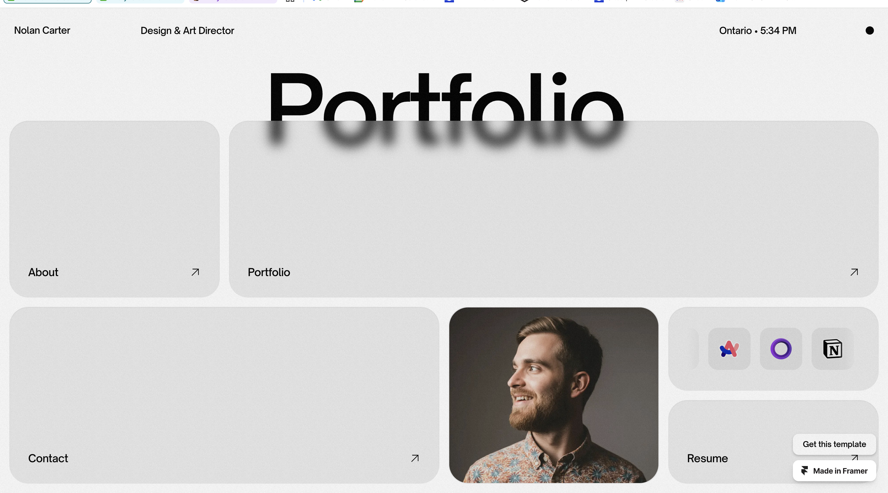
T2-nolan-carter-bento-grid
Nolan Carter (Framer)
"A little too Apple" but likes the square blocks with glass morphism for presenting clients or portfolio. Reminds him of an earlier idea for the Brand Therapy Blueprint: a summary frame with archetypes, bio, portrait in rounded-corner blocks. "Probably not as a main brand signature" but useful as a component.
Bento/card grid for portfolio or blueprint presentation. Secondary pattern, not primary. Could work for the Brand Therapy Blueprint deliverable visualization.
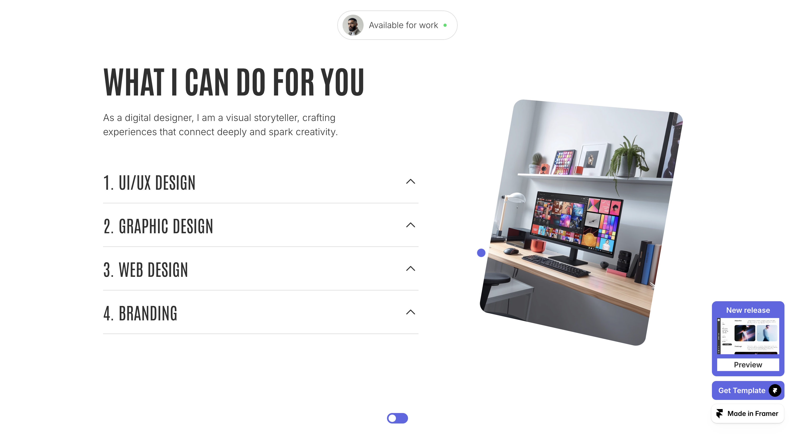
T2-duncan-robert-services-accordion
Duncan Robert (Framer)
"I forgot exactly why I screenshot that one." Low priority.
Service accordion pattern already captured better in Cheval reference (T1).
Photography + Portrait Treatments
How portraits and editorial photography are framed and presented.
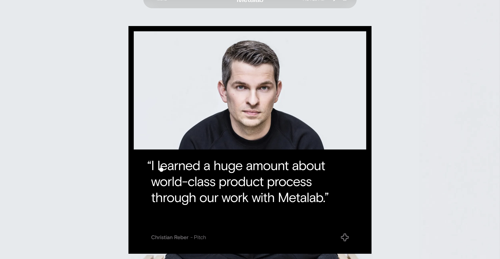
T2-tempo-testimonial
tempo.xyz (Metalab)
The animation was amazing. Looks like a Polaroid picture. As you scroll, the person gets behind the picture. "There is that idea of photography, visibility, magazine cover, editorial portrait." Likes the frame/Polaroid metaphor for portraits.
Portrait inside a frame that scrolls independently. Polaroid/editorial frame treatment for testimonials or about sections. The frame adds editorial quality to any portrait.
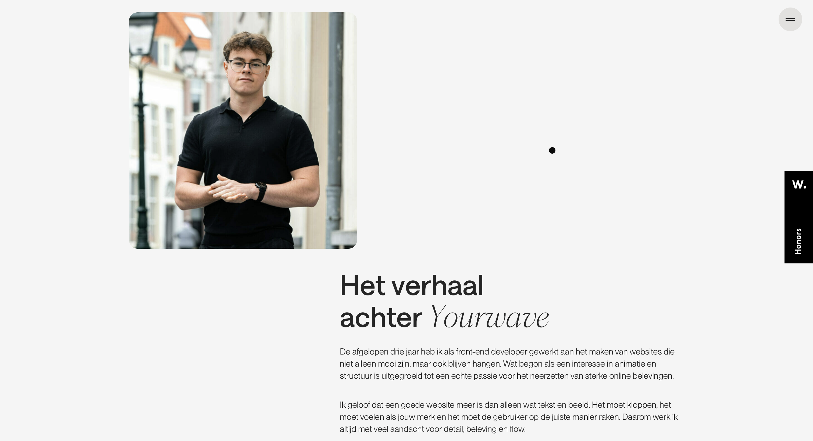
T2-cheval-about
valentincheval.design (about page)
Similar to earlier: one image on one side, text on the other. "It only works when you scroll through it." Likes how it's a little bit artistic and not just basic UI.
Asymmetric photo + text layouts need scroll interaction to come alive. Static two-column is basic. Movement makes it editorial.
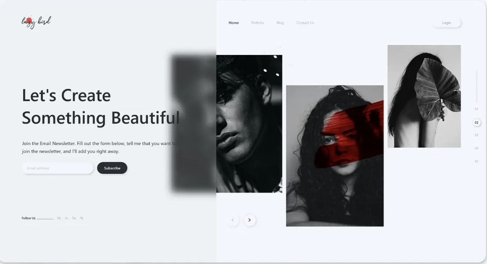
T2-editorial-photography-carousel
Unknown
Could be how we have pop-ups for newsletter, contact form. The left side's glassmorphism/blur treatment for overlays.
Glass/blur treatment for modals, popups, newsletter signup. The blurred photography behind a form creates the lens effect.
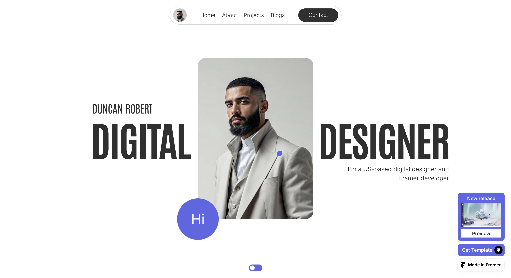
T2-duncan-robert-light
Duncan Robert (Framer)
Likes the composition but prefers cutout portraits over boxed/framed ones. "Don't like the font." Same in dark mode (next screenshot).
Cutout is preferred over framed for hero/main portraits. Framed is for secondary/editorial contexts.
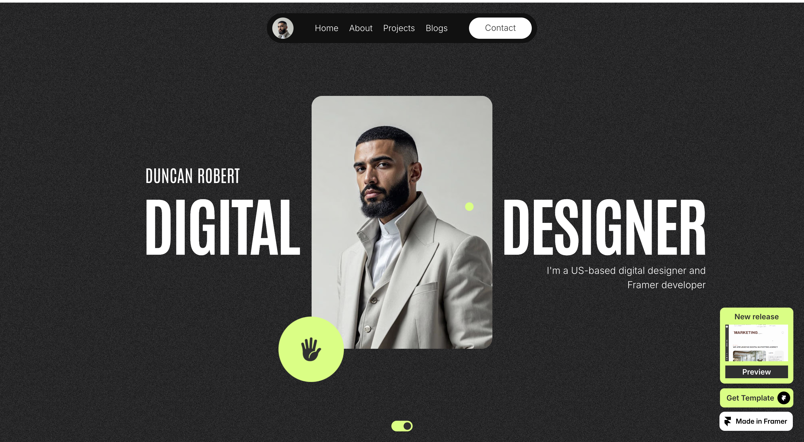
T2-duncan-robert-dark
Duncan Robert (Framer)
Same as above in dark mode. Noted for the light/dark toggle concept.
Same site in light and dark. The toggle concept is interesting but secondary.
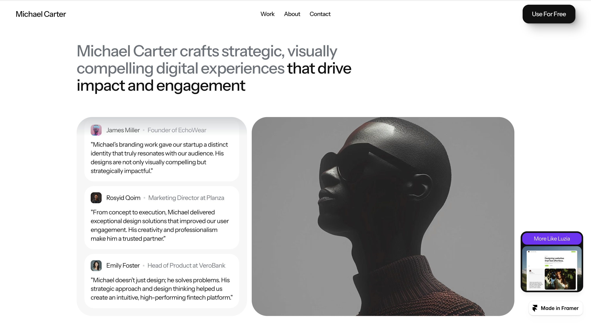
T2-michael-carter-testimonials
Michael Carter (Framer)
Likes the heading/paragraph at top where copy changes color as you scroll. Already doing something similar. Wants to combine color-change-on-scroll with the text reveal blocks.
Scroll-triggered color change on text + text reveal blocks = combined effect. Text starts gray/hidden, becomes black/purple as it scrolls into view.
Product / SaaS Layouts (Ivy App)
Clean minimal product showcases. Mostly captured for animation and glass feel.
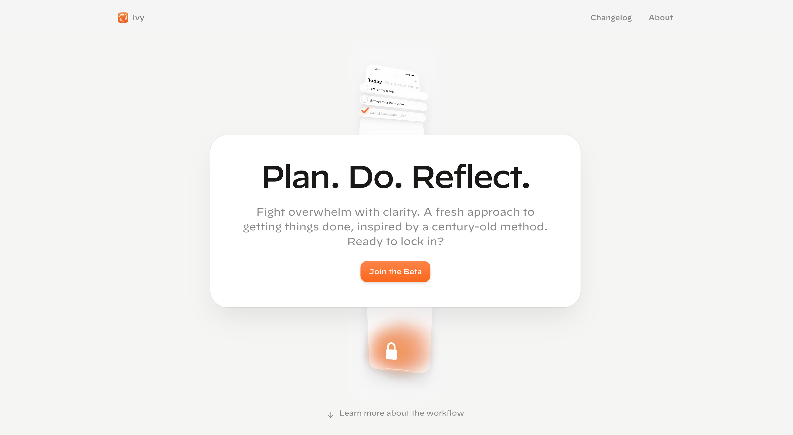
T2-ivy-hero
Ivy app
Mostly for the animation and glassmorphism treatment.
Glass feel that's subtle, not in your face.
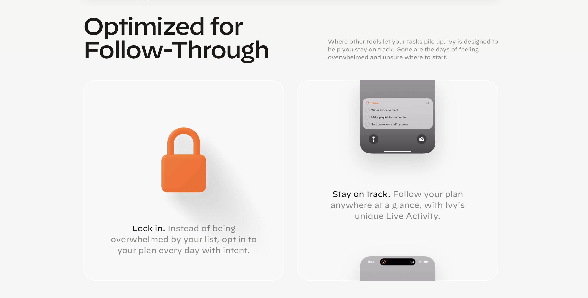
T2-ivy-features
Ivy app
Likes how it has a glass feel but not "in your face." The color is almost the same as the background but you still have that little feel of a glass lens. Very subtle.
Subtle glass = almost-same-color panels with barely visible borders and slight blur. This is the right level of glassmorphism for FP: felt, not seen.
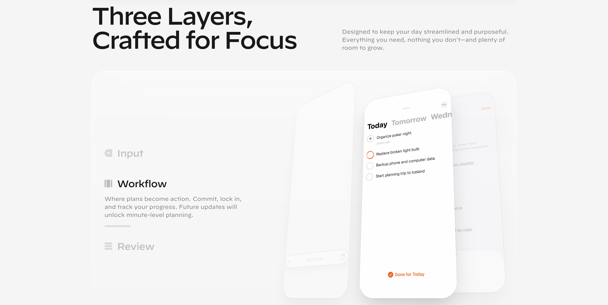
T2-ivy-layers
Ivy app
Mostly the animation and how the composition and design is very clean.
Clean composition reference. The layered device mockup presentation could work for showing the Brand Therapy Blueprint deliverable.
Illustration + Wireframe Style
How to handle illustrations, icons, and visual diagrams.
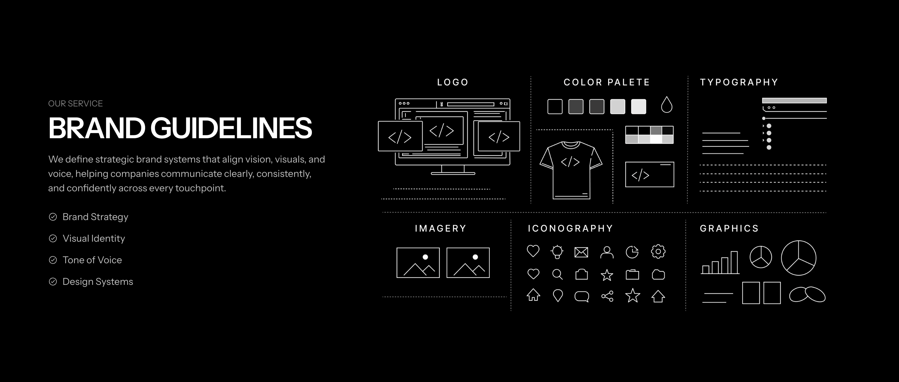
T2-brand-guidelines-wireframe
Unknown
Likes the minimalism. Thinking about illustration style. "I've always had trouble finding the right way to illustrate." Even though purple is the brand color, this thin-line, just black and white approach for icons and illustrations makes sense. No colors in illustrations.
Illustration direction: thin-line, B&W only, no fill, no color. Let photography carry the visual weight. Illustrations are structural, not decorative.
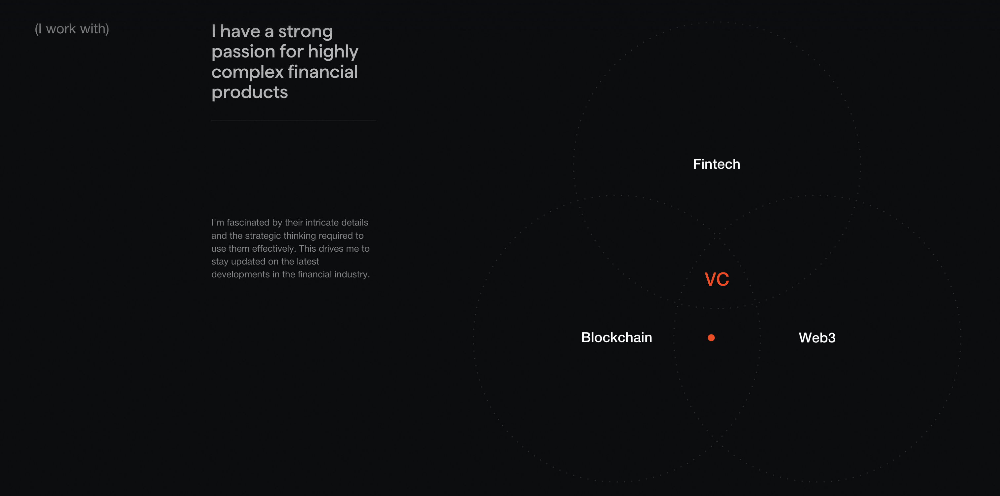
T2-cheval-floating-words
valentincheval.design
(Part of the Cheval graph/spatial section. Liked as a way to display expertise areas or focus disciplines in a spatial, non-linear way.)
Floating words in space for showing disciplines/expertise. Non-linear, spatial typography. Could work for a "What I Work With" section.
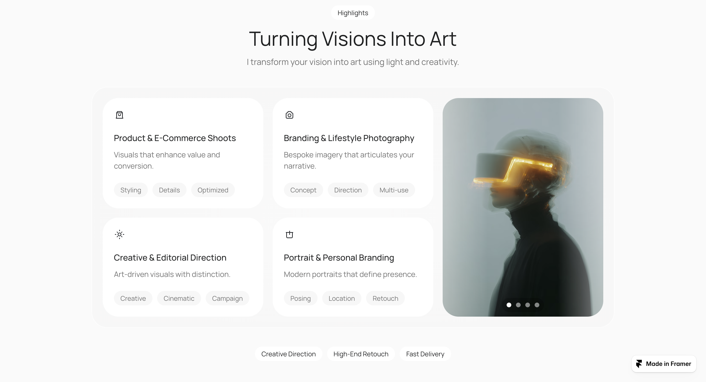
T2-niore-service-cards
niore.framer.website
"Going back to those glass morphism blocks. I think there's space for that somewhere, but not as a primary design direction."
Glass/rounded service cards are a component option, not a direction. Secondary to the editorial structure.
Strategic Ideas + Glass Morphism Reference
These aren't design direction references. They're specific ideas or glass/lens texture references.
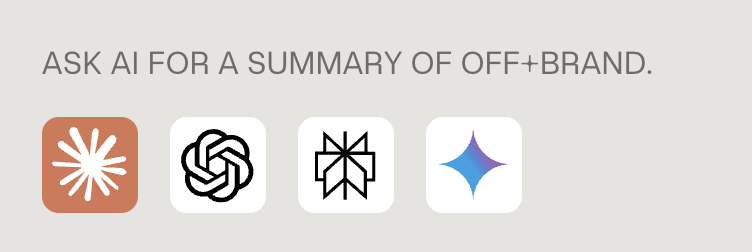
T3-offbrand-ai-summary
Off+Brand
"Not for design purposes." An extremely smart idea to have AI summary links on the homepage. Sends a message of being AI-savvy. Benefits for SEO/GEO. Can send users to a pre-prompted AI chat that provides third-party validation. "Somehow very good PR."
AI summary badge is a strategic decision, not a design one. Pre-prompted AI chat link = controlled third-party validation. Implement as a fixed-position badge.
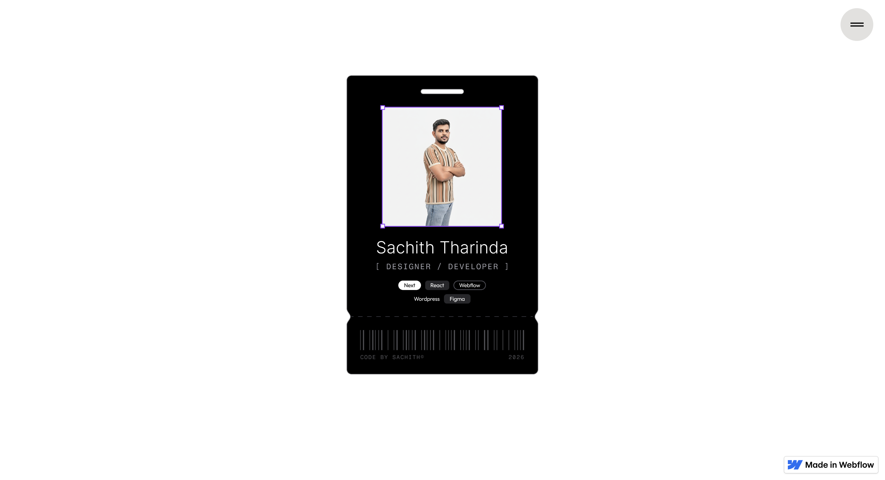
T3-sachith-id-badge
sachith-tharinda-2026.webflow.io
Likes the Polaroid frame concept and that it's not taking over the whole screen, just centered in the middle. His homepage was just this badge.
Small, centered object on a large canvas. The negative space IS the design. Polaroid/badge as a contained composition rather than full-bleed.
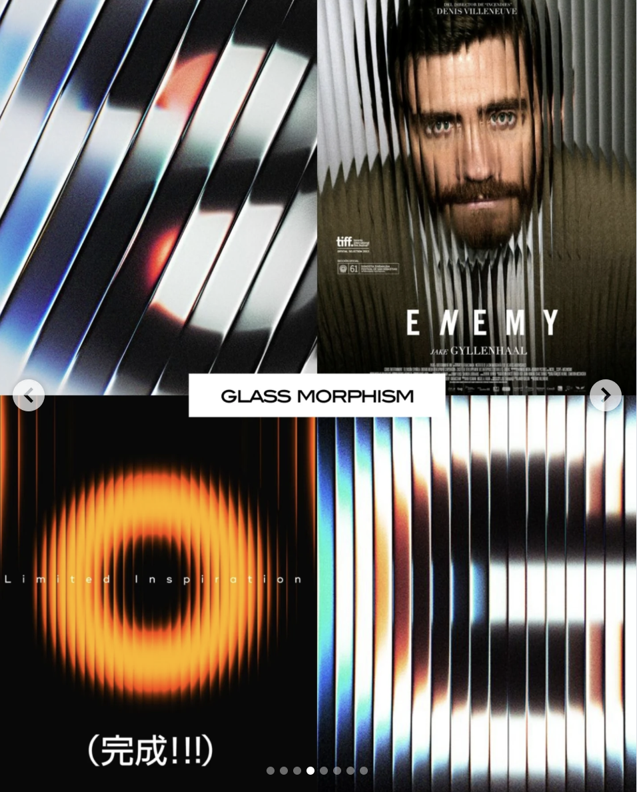
T3-glass-morphism-textures
Instagram / glass morphism reference
"A little bit too extreme." But maybe usable as a loading screen animation: glass frames sweeping across the whole screen. Movie poster vibes through glass.
Glass morphism at this intensity = loading animation or transition effect only. Not for static design. The idea of glass frames as a loading/transition is interesting.
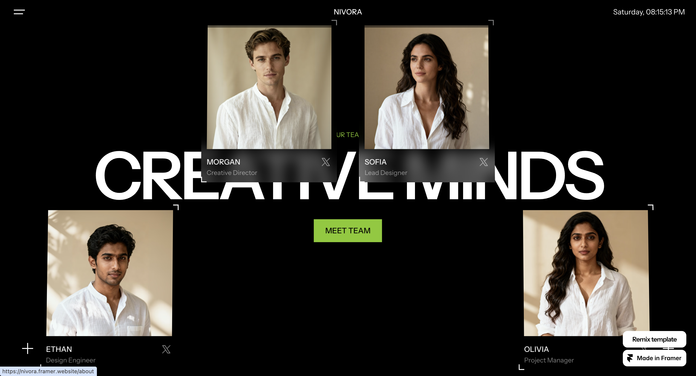
T3-nivora-team
portavia.framer.website
Likes the Polaroid frame combined with glass morphism. The frame + glass treatment on portraits.
Frame + glass on portraits. Useful for testimonial sections or team/client displays.
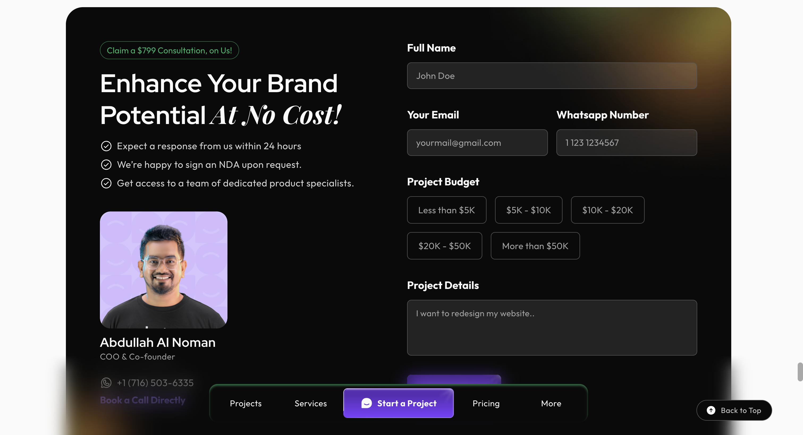
T3-dark-glass-contact
Unknown
"The idea of the glass here, but not so important."
Glass card for contact/form sections. Low priority reference.
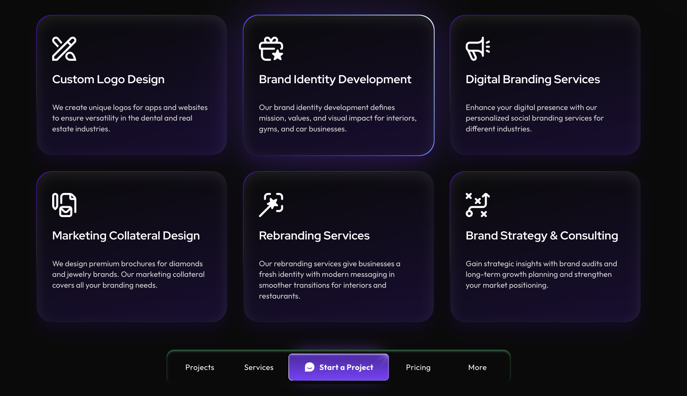
T3-dark-service-cards
Unknown
"We've gone over this." Glass block reference, not directional.
Glass service cards. Already captured in other references.
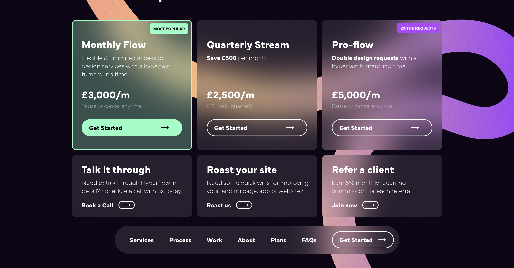
T3-hyperflow-pricing
Hyperflow agency
"The idea of glass blocks."
Glass cards for pricing. Low priority.
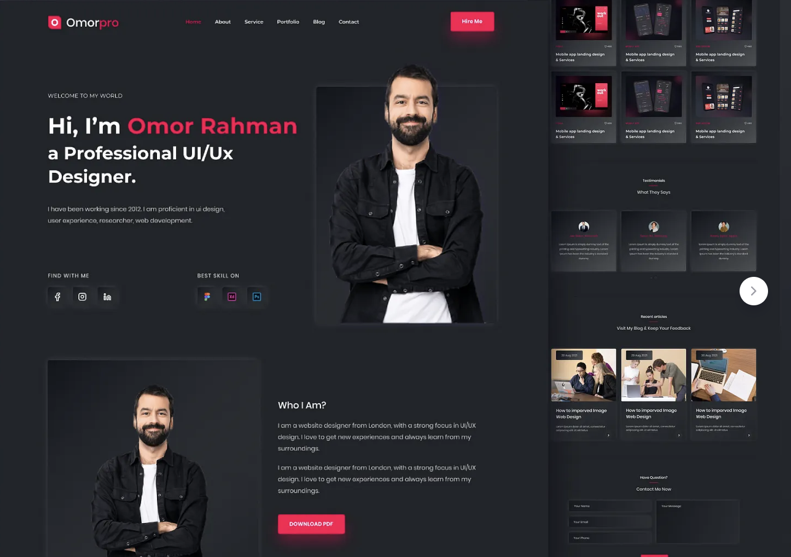
T3-omar-rahman
Omar Rahman portfolio
"Meh. We've seen better examples of composition."
Not useful. Generic template energy.
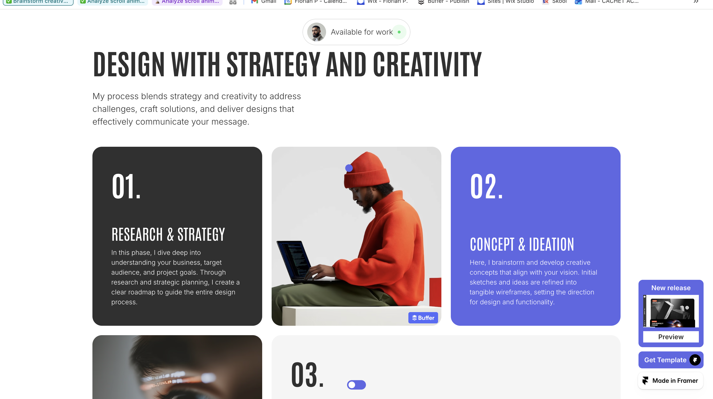
T3-design-process-grid
Unknown (Framer)
Likes the little blocks, especially because one is almost the FP purple. Some interesting composition.
The colored numbered blocks as a process visualization. Minor reference. The purple block resonating is a nice data point.